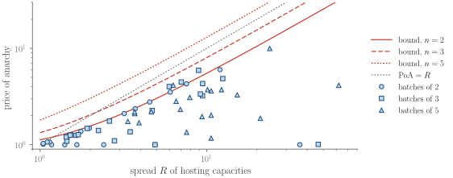
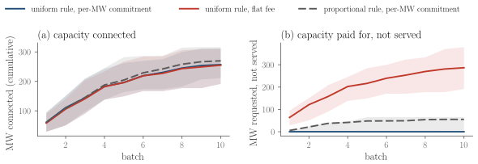
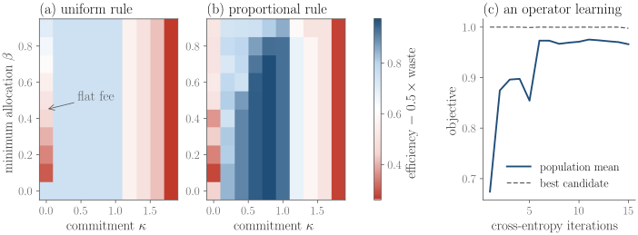
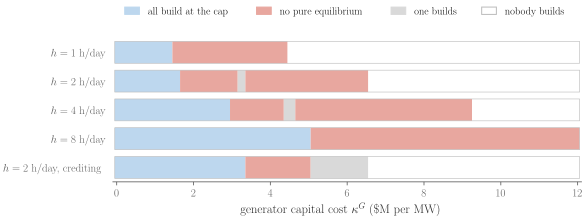

Overview
Requests from data centers and other large loads now arrive faster than grid operators can study them one at a time, so operators such as ERCOT are moving to batch studies [1, 2], much as generator interconnection moved to cluster studies [3]. Many requests are studied together, and the capacity the network can host is split among them. How it is split shapes what applicants ask for: an applicant that expects to be cut back may inflate its request [4], while one that pays for every requested megawatt has a reason not to.
interconnection-gym turns this into a multi-agent game on real network data. The equilibria of the allocation rules are known in closed form, so operators can compare rules before adopting them, and any model of applicant behavior can be checked against ground truth.
For operators
Compare allocation rules and fees on your own network: who gets served, how much capacity goes unused, and how much applicants inflate their requests at equilibrium.
The Batch Game
Locations are fixed in the default game. Applicant \(i\) sits at a given bus and chooses only how many megawatts to request. Letting applicants also choose where to connect is a separate game, the location game (LocationGame); generators, batteries, and non-firm service add a second decision at the same fixed bus.
Applicant \(i\) requests \(r_i\) MW at its bus. The network enters only through its batch region: the served loads that every studied hour can host after the existing generators are redispatched. The region is exported exactly from a DC power-flow scenario,
$$\tilde{\mathcal H} = \{\, s \ge 0 : A s \le b \,\}, \qquad s = U(r) \in \tilde{\mathcal H}, \quad s \le r .$$The operator's rule \(U\) splits the region among the requests. The default uniform rule [7] raises every served load together, and stops each one at its request or when a limit it loads binds (water-filling, which reaches the max-min fair point [8]). A minimum allocation \(\beta\) drops applicants served less than \(\beta r_i\). Each applicant earns the value of what it is served, minus a commitment on what it requested,
$$u_i(r) = V\, s_i - \kappa\, r_i .$$The package also models the proportional and utilitarian rules, flat fees and security deposits, location choice, on-site generation and storage, and firm and non-firm service.
Try It
Two applicants at buses 9 and 13 of the IEEE 14-bus system, each valuing a megawatt at \(V = 1\). Choose the rule, the minimum allocation \(\beta\), and the commitment \(\kappa\) per requested megawatt. The page computes the applicants' equilibrium requests, the same way the package does: the theory's answer where it is known, and best-response dynamics otherwise.
Shaded: the served loads the network can host. Hollow red circle: the applicants' equilibrium requests; filled red circle: what the rule serves; blue dot: the planner's optimum; dashed box: the flat-fee band of equilibria. Links can preset the controls, for example the proportional rule without a minimum allocation.
What the Theory Guarantees
Each result is exposed as an oracle in the package, and the test suite checks it against the engine.
| Setting | Equilibrium | In the package |
|---|---|---|
| Uniform rule, per-MW commitment (fixed buses) | the max-min fair point \(w\), unique and served in full, for any \(\beta\) | predicted_equilibrium |
| Best-response dynamics | reach \(w\) within \(2n\) rounds (no minimum allocation) | best_response_dynamics |
| Flat fee | every profile in \([w, w/\beta]\), all serving \(w\) | predicted_equilibrium |
| Proportional rule, one limit | requests inflated [4] by \(\rho = \min\{\max\{(1-1/n)V/\kappa, 1\}, 1/\beta\}\) | proportional_inflation |
| Efficiency | price of anarchy [9, 10] at most \((1+nR)^2/(4nR)\), with \(R\) the spread of hosting capacities | poa_bound |
| Location choice (buses chosen) | a strong pure equilibrium; every improving move raises the sorted shares [11] | LocationGame |
| On-site generation | three regimes under the gross rule (no build, all at the cap, none); unique under crediting | GenerationGame |
| Firm and non-firm service | an equilibrium on any network under the two-tier rule, served in full | NonFirmGame |

How much does fairness cost? [12] The price of anarchy of the uniform rule's equilibrium, for 60 random batches of two, three, and five applicants on the 2,000-bus synthetic Texas grid, against the spread \(R\) of their single-bus hosting capacities. No batch exceeds the bound \((1+nR)^2/(4nR)\), pairs come within 0.4% of it, and every batch stays below \(R\): the loss is set by how unequal the sites are.
For Operators: Compare Rules
icgym-compare takes a DC power-flow scenario and the buses in a batch, and finds each rule's equilibrium. It reports served megawatts, efficiency against the planner's optimum, request inflation, capacity paid for but not served, and the binding limits. The output is a table, JSON, or an HTML report.
icgym-compare --data path/to/scenario --buses 9,13,14 \
--rules uniform,proportional,utilitarian --kappa 0.4 --beta 0.5 --html report.html
Three rules on one batch of the IEEE 14-bus system. The uniform rule serves less in total, but every request is honest. The proportional rule serves more, yet every applicant inflates its request by 1.69 and pays for capacity it does not get. The utilitarian rule reaches the planner's total here, by concentrating service on the site that loads the limits least.
For batches of any size on large networks, --implicit keeps the exact network region implicit and queries it with linear programs, at seconds per allocation on the 2,000-bus grid.
Takeaways for operators
- Pair the allocation formula with a commitment per requested megawatt. Under the uniform rule, any positive commitment makes the max-min fair point the unique equilibrium. Every request is then honest and served in full, and nothing is paid for that is not built.
- Avoid flat fees. With a fee that does not grow with the request, every request up to \(1/\beta\) times the fair share is an equilibrium. Studies then fill with capacity no one will build.
- Keep the minimum allocation well below one. A high minimum combined with coarse request sizes makes applicants ask for less than the network can host. Under the proportional rule it can also keep requests from settling at all.
- If you use the proportional rule, set the commitment close to the value of a megawatt. Its inflation factor \(\rho = (1-1/n)V/\kappa\) then falls to one: requests become honest, and on batches of the synthetic Texas grid the rule serves nearly the planner's total. But a commitment above an applicant's value prices it out, and operators rarely know values. The uniform rule needs only a positive commitment, and it is the rule that gives applicants equal megawatts.
- Offer non-firm service as a second tier. Studying firm requests first, and non-firm requests on the off-peak room left, has an equilibrium on any network, with every request served in full.
- Credit on-site generation and flexibility to its owner. When the capacity a generator frees is shared, applicants wait for each other to build and no stable outcome exists. On a real network, each owner's credit should not depend on its rivals' generation.
- Expect the efficiency loss to track the spread of the sites. Equal shares cost the most when sites differ most in what the network can host at them, and the price of anarchy is bounded by \((1+nR)^2/(4nR)\), a function of that spread \(R\) alone.
For Researchers: Applicant Models and Benchmarks
| Environment | Interface | Actions |
|---|---|---|
BatchRequestParallelEnv | PettingZoo | a request at a fixed bus (continuous) |
SingleApplicantEnv | Gymnasium | one applicant model against fixed rivals |
LocationParallelEnv | PettingZoo | a bus from a menu (discrete); requests at their equilibrium |
DeviceParallelEnv | PettingZoo | a request plus a generator, battery, or non-firm share, at a fixed bus |
VectorBatchRequestEnv | NumPy, many copies per call | batched requests, about 50 times faster |
SequentialBatchEnv | PettingZoo | requests in a queue studied batch after batch; agents arrive and leave |
OperatorEnv, SequentialOperatorEnv | Gymnasium | the operator's choice of rule, \(\beta\), and \(\kappa\); applicants answer at equilibrium |
from icgym import BatchGame, PerMWCommitment, UniformRule, ieee14
from icgym.envs import BatchRequestParallelEnv # PettingZoo ParallelEnv
from icgym.benchmarks import run
game = BatchGame(ieee14((9, 13, 14)), UniformRule(beta=0.5), PerMWCommitment(0.4))
env = BatchRequestParallelEnv(game, rounds=20, observation="public")
run("uniform-ieee14", "independent_pg", seed=0) # exploitability, distance to w, efficiency
Eight tasks with known answers and three baselines, mean over three seeds. Each cell is the exploitability of the final profile: the largest gain any agent has from deviating alone, relative to its value at its hosting capacity (0 at an equilibrium). Even applicants that adapt from their own payoffs alone (policy gradient) reach the equilibrium wherever one exists. In the generation game with no pure equilibrium, every baseline stays exploitable. Under the proportional rule with a minimum allocation, best responses stall: the best payoff is a vanishing undercut of a rival, and it is never attained.
Beyond One Batch
Sequential batches
Real queues run batch after batch. Applicants arrive at buses with the size they need and a value per megawatt. Each batch is served on the capacity left by earlier batches, net of load growth. Served capacity connects for good, and unserved need waits for the next batch. The ground truth is the equilibrium of every batch, so learners can be scored batch by batch.
Designing the rule
The operator is the designer. It chooses the rule, the minimum allocation, and the commitment, for one batch or before every batch of a queue. Applicants answer at equilibrium, and each design is scored by efficiency, minus wasted requests and unfairness. This makes the gym a testbed for mechanism design: a search over designs is checked against the applicants' best responses, not against assumed behavior.

A queue, batch after batch. Twenty random queues on five buses of the IEEE 14-bus system; lines are means and shaded bands the middle half. All three regimes connect about the same capacity (the proportional rule about 5% more). Their waste differs: the uniform rule with a per-MW commitment wastes nothing, the proportional rule wastes some, and a flat fee leads applicants to request about twice what they are served, clogging the study with capacity no one will build.

The operator's landscape. Efficiency minus half the wasted requests, averaged over twelve batches of the synthetic Texas grid with values between 1 and 2 per MW, at the applicants' equilibria. (a) The uniform rule earns the same for every positive commitment (honest requests, efficiency \(1/\mathrm{PoA}\)); a flat fee wastes, and a commitment above the values drives applicants out. (b) The proportional rule does better when the commitment is close to the value: its inflation factor \(\rho = (1-1/n)V/\kappa\) falls to one, so requests become honest while the rule serves more. (c) A simple search over designs (cross-entropy method) finds that corner. Adding a fairness term (Jain's index [13]) changes the choice only when fairness means equal megawatts and counts at least 2.4 times as much as efficiency; when fairness means equal shares of each site's hosting capacity, the proportional rule is also the fairer one.
On-site generators, batteries, and curtailment can also be dispatched hour by hour over the network's real days (DeviceRegion), and energy can be charged at locational prices (EnergyCharge). With them the package reproduces the accompanying study’s experiments, except those run on its full production evaluator.

Who builds on-site generation? Two applicants at buses 1 and 2 of the IEEE 14-bus system, generators dispatched over the real days within a daily run-hour budget \(h\). Cheap generators are built by everyone and expensive ones by no one; in between, no pure equilibrium exists, because building helps the builder one for one while scrapping hurts everyone. Crediting the freed capacity to its owner narrows that band, from $1.7–6.6M to $3.4–5.1M per MW at 2 h/day.
Scope and Limitations
The gym is a model for comparing rules and studying strategic behavior. It is not a substitute for an interconnection study. Its main simplifications:
- Network model. DC power flow with thermal branch limits and redispatch of existing generators. There is no AC power flow (voltage, reactive power, stability), and no N-1 or other contingency constraints, so hosting capacities are optimistic compared with a security-constrained study.
- Time. Five representative days of hourly load stand for a year, and the base load does not grow, except through the optional growth term of sequential batches.
- Data. The 2,000-bus grid is synthetic. It is not ERCOT data, an official model, or a forecast. The IEEE 14-bus thermal limits, generator costs, and load shape are the package's own instructional choices.
- Applicants. Applicants know the rule, the network, and each other's values. Each wants capacity at one site (or in fixed proportions across sites) and is risk neutral. Values and costs are illustrative.
- Counterflow. Exported regions treat the relief one new load gives another as non-firm, which is conservative.
DCOPFRegionkeeps the exact region. - Equilibria. Where the theory gives no closed form, equilibria are found by numerical search on strategy grids or by best-response dynamics. These can miss narrow profitable deviations, and under a minimum allocation they may not settle.
- Prices and devices. Energy prices are DC locational marginal prices from linear generator costs. Capacity markets and transmission cost allocation are not modeled. Storage and run-hour budgets are dispatched within each day, without the full production evaluator's economics.
Data
- ACTIVSg2000, the synthetic 2,000-bus Texas grid, over five representative days. The package ships exact batch regions of 150 bus pairs, 35 batches of two or three buses, and 8 location multisets, plus reference results for batches of five buses and for a location game over six buses. The data is adapted from a CC BY 3.0 work; please cite Birchfield et al. [14].
- IEEE 14-bus, built on your machine on first use, from the public MATPOWER case file [15] and the package's own limits and load profile. Any set of buses is exported in seconds. The case file itself is not redistributed.
- Your network:
icgym-exportbuilds the exact batch region of any buses from a DC power-flow scenario.
Get Started
pip install "interconnection-gym[envs] @ git+https://github.com/MhaoMou/interconnection-gym"from icgym import BatchGame, PerMWCommitment, Region, UniformRule
region = Region(A=[[1.0, 1.0, 0.0], [0.0, 1.0, 1.0]], b=[2.0, 3.0]) # two shared limits
game = BatchGame(region, UniformRule(beta=0.5), PerMWCommitment(kappa=0.4), value=1.0)
w = game.predicted_equilibrium()["requests"] # the unique equilibrium: [1, 1, 2]
game.exploitability([1.5, 1.0, 2.0]) # applicant 0 gains 0.2 by returning to wReferences
- ERCOT, “Trending Topics: ERCOT’s New Batch Connection Process for Large Electricity Users,” June 2026. [PDF]
- ERCOT, “ERCOT Comments on NPRR1325 and PGRR145,” Board of Directors meeting, item 15.1.4.3, June 2026. [PDF]
- FERC, “Improvements to Generator Interconnection Procedures and Agreements,” Order No. 2023, 184 FERC ¶ 61,054, July 2023. [link]
- G. P. Cachon and M. A. Lariviere, “An equilibrium analysis of linear, proportional and uniform allocation of scarce capacity,” IIE Transactions, 31(9):835–849, 1999. [DOI]
- J. K. Terry et al., “PettingZoo: Gym for multi-agent reinforcement learning,” NeurIPS, 2021. [arXiv]
- M. Towers et al., “Gymnasium: A standard interface for reinforcement learning environments,” 2024. [arXiv]
- Y. Sprumont, “The division problem with single-peaked preferences: A characterization of the uniform allocation rule,” Econometrica, 59(2):509–519, 1991. [DOI]
- N. Megiddo, “Optimal flows in networks with multiple sources and sinks,” Mathematical Programming, 7:97–107, 1974. [DOI]
- E. Koutsoupias and C. Papadimitriou, “Worst-case equilibria,” STACS, LNCS 1563, pp. 404–413, 1999. [DOI]
- R. Johari and J. N. Tsitsiklis, “Efficiency loss in a network resource allocation game,” Mathematics of Operations Research, 29(3):407–435, 2004. [DOI]
- T. Harks, M. Hoefer, K. Schewior, and A. Skopalik, “Routing games with progressive filling,” IEEE/ACM Transactions on Networking, 24(4):2553–2562, 2016. [DOI]
- D. Bertsimas, V. F. Farias, and N. Trichakis, “The price of fairness,” Operations Research, 59(1):17–31, 2011. [DOI]
- R. Jain, D.-M. Chiu, and W. R. Hawe, “A quantitative measure of fairness and discrimination for resource allocation in shared computer systems,” DEC Research Report TR-301, 1984. [arXiv]
- A. B. Birchfield, T. Xu, K. M. Gegner, K. S. Shetye, and T. J. Overbye, “Grid structural characteristics as validation criteria for synthetic networks,” IEEE Transactions on Power Systems, 32(4):3258–3265, 2017. [DOI]
- R. D. Zimmerman, C. E. Murillo-Sánchez, and R. J. Thomas, “MATPOWER: Steady-state operations, planning, and analysis tools for power systems research and education,” IEEE Transactions on Power Systems, 26(1):12–19, 2011. [DOI]
BibTeX
@software{interconnection_gym,
title = {interconnection-gym: Batch Interconnection of Large Loads as a Multi-Agent Game},
author = {Mou, Minghao},
year = {2026},
version = {1.0.0rc1},
url = {https://github.com/MhaoMou/interconnection-gym}
}